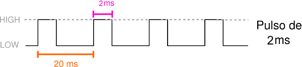

Motor Brushless A2212/15\(T\)-930\(KV\)
El motor empleado sera un motor sin escobillas outrunner genérico link.

Características
- Celdas: 3S
- Peso de arrastre Max. 830 \(g\)
- kv: 920 \(kv\)
- Diámetro eje: 3 \(mm\)
- Diámetro : 27.60 \(mm\) (1.09 \(in\) )
- Largo: 26.70 \(mm\) (1.05 \(in\) )
- Maximum Amps: 12
- Rm: 0.388
- Io: 0.55
Controlador del motor (ESC)
Para controlar los motores, se utilizó el "EMAX Multirotor 4IN1 ESC(4*25A)".

Calibración
Cuando los motores no están calibrados, o en caso de que se deseé cambiar la calibración de los motores, una opción es calibrarlos utilizando el controlador. El controlador.
La calibración con el controlador, .
